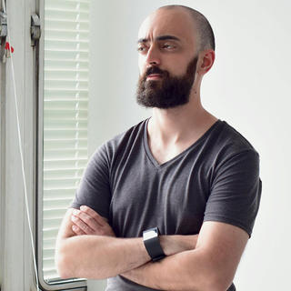

Renan Ranelli

Rewriting critical software in Elixir - a case study
Most companies adopting Elixir start small, with a proof of concept or a rewrite of a non-critical service. At Telnyx, they chose the hard route: rewriting a high volume, highly available and economically-critical service. This talk will explore their strategy in doing so, what went well, what didn't, and what they wished they knew at the beginning. If you're thinking about adopting Elixir and/or rewriting a piece of software but are apprehensive because of possible problems, then this talk is for you.
Objectives
The objective of this talk is to encourage developers to adopt Elixir at established companies and also feel confident about its merits (e.g. runtime, ecosystem, etc). At the same time, it intends to provide an impartial and clear engineering perspective, all based on real world experiences and examples.
Audience
Developers who need to rewrite existing software in Elixir.
Renan is a Brazilian software developer focused on backend, operations and databases, working with Elixir since 2015. He has worked in companies both very large and very small. He has also a frequent speaker at technology events in Brazil, and have spoken numerous times about Elixir, both locally and abroad. Currently, he works remotely for Telnyx LLC, a chicago based company whose mission is to democratise global communications. When not talking about software, Renan likes to cook, make cocktails and dance.
Github: rranelli
Twitter: @renanranelli